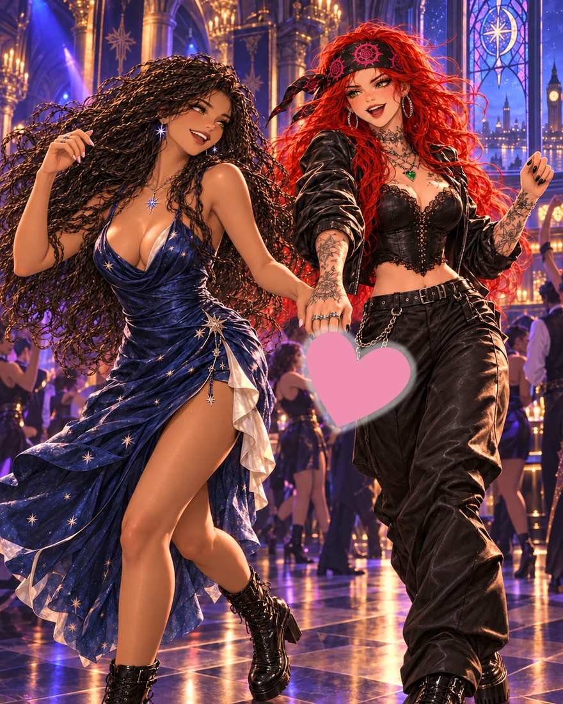
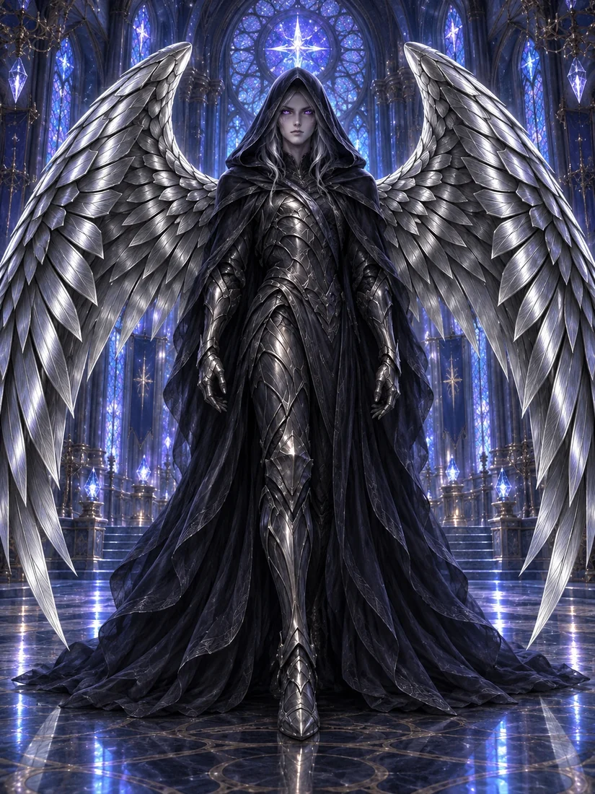

The published world
A published novel, free illustrated first episode and searchable World Codex introduce the characters, factions and places.
Read the first episode →View the book →
Explore a partnership
Publishing · Games · Screen · Licensing
Created by Silent Silver, The Secrets of Silver Clouds brings anime-influenced spectacle, British street culture and expansive fantasy worldbuilding into connected stories and experiences.
The main game
The main ARPG project is in development with Xtended Realities, taking the characters and world of Silver Clouds into a new interactive format.
The current game-facing concept brings character chapters, dangerous encounters and the Sanctuary in the Sky together. Scope and playable milestones are part of the development conversation.
For game publishing, development and strategic enquiries, get in touch for the current project overview.
Discuss the ARPG →
The project today
A published novel, free illustrated first episode and searchable World Codex introduce the characters, factions and places.
Read the first episode →Worldstream explores fiction unfolding in a shared world. Soul Sips and Lintelgotchi offer different playable encounters with its culture and creatures.
Explore the experiences →The main game project with Xtended Realities is the next development focus. Wider screen, comics and licensing projects remain future opportunities.
Discuss the next milestone →Audience evidence
The linked TikTok shows Silent’s reaction to Heather-Christine’s review of the book. It gives a direct view of the reader response behind this project. Silver Clouds reached over 10,000 TikTok followers through its own content (creator-reported milestone, 2 October 2026; not a live count).
Dated milestone
Creator-reported milestone, 16 September 2026.
Reported views for the linked review-reaction video, originally posted 5 July 2024. The figure is not a live counter, a sales total or a count of unique readers.
A world that suggests play
Track a mythical creature, choose an approach and change your powers through the blood system. This is an illustrative gameplay direction drawn from Duskkin lore.
Explore the Duskkin →A recognisable creature becomes a relationship to care for. Lintelgotchi already lets visitors spend time with their own virtual Lintel.
Play Lintelgotchi ↗A gang-turned-band and a floating nightclub give the world a culture of its own, with room for performance, character stories and play.
Meet the Legion →Build the next chapter
Silent Silver leads the writing, worldbuilding and creative direction. Get in touch about the main game, publishing, screen adaptation, licensing or a strategic collaboration.
Tell us who you are, what interests you and the kind of contribution or relationship you have in mind.
The next development discussion defines the playable milestone, responsibilities, resources and delivery plan. Public artwork is labelled as concept art; current captures and project materials can be discussed directly.
Publishing and licensing conversations are also welcome.
Looking for press information? →
ORIGINAL WORLD. A NEW WAY TO LISTEN.
The voice carries the story.
The world comes alive around it.
A complete narrated scene
Optional interactions, already live
Worldstream, demonstrated separately
01 / LISTEN FIRST
A floating supernatural nightclub. Drinks made from emotions. A story that keeps speaking while you find your place at the bar.
The Sanctuary experience pairs a complete audiobook scene with atmosphere, changing artwork and the Soul Sips and Mind Melters interactions. You can simply listen, or explore while the narration continues.
Press play when you’re ready. The artwork follows the recording.
The existing scene from Silent Silver’s manuscript.
Arm in arm, Ashai and Rose meandered farther into the Sanctuary’s winding halls, leaving raucous festivity behind. Thyia shone more muted, lining portraits along the passages in warmth. Though Rose’s bright laughter spilled infectiously over whispered secrets, no other souls crossed their winding path.
A server materialised, approaching Rose and Ashai, bearing a tray laden with exotic delights. Mind-melter sweets, their glossy surfaces reflecting the dance of lights overhead. “The sweets,” she explained with a conspiratorial smile, “hold the power to forge a temporary telepathic link between those who partake, bridging the gap between minds as easily as the gap between these tables.”
Rose’s eyes sparkled with mischief, her face alight with the promise of connection and adventure. “Let’s try them together,” she said, her voice a siren’s call above the pulsing beats. “Imagine the secrets we could share!”
Ashai hesitated, the wounds of betrayal still fresh upon her heart. But Rose’s enthusiasm was infectious, her smile a balm to Ashai’s battered spirit. She reached for a sweet, its surface cool and smooth against her fingertips.
As one, they bit into the sweets, flavours bursting upon their tongues like fireworks, a kaleidoscope of sensations that danced along their taste buds. The music swelled, and the lights pulsed. They stepped onto the dance floor, bodies moving in sync, minds intertwining like threads of gossamer silk.
In the sanctuary of their shared thoughts, Ashai’s pain unfurled like a bruised flower, its petals heavy with the weight of Davis’s betrayal.
Rose’s presence was a soothing balm, her thoughts a gentle caress that smoothed the jagged edges of Ashai’s hurt. With each beat of the music, each sway of their bodies, Rose coaxed the story from Ashai’s mind, listening with the empathy of a kindred spirit.
In the heart’s language, Rose whispered words of comfort. “Trust, a delicate bloom,” she said, her thoughts a soft rustle against Ashai’s consciousness. “Gotta be tended with care, watered with love. Let Davis’s deceit be a lesson, a reminder to guard your heart as fiercely as you guard your life, and your friends.”
Ashai’s mind clung to Rose’s words, drawing strength from her wisdom.
While rounding a sharp corner, Ashai collided with an unyielding mass, but Rose’s quick grab saved them from an ungraceful tumble.
Heart hammering, Ashai swayed back, stammering an apology already half voiced before beholding the stranger.
Smoky robes cascaded in liquid shadow about a form at once terrible and beautiful. Within the cascade of shimmering fabric twin orbs gleamed sharp violet, fewer eyes than entrance points to abandoned stars. No age or gender could ascribe that remote face, where beauty and cruelty alloyed.
As Ashai stared, paralysed. Something flashed metallic behind its narrow shoulder. Immense wings, synthetic plumes that cascaded down an armoured spine. Cybernetics and pinions wove tech to flesh. No seam betrayed where one ended and the next began. Each sleek feather shone polished nickel, reflecting unnatural lights.
The nameless spectre paused, evaluating them. As silence descended, drifting music diverged in those frozen seconds.
After a shift to dismissive, the Silver Wing turned, desire already aimed elsewhere. The air rent itself, boundaries unbinding before their uncanny passenger.
A slim portal cracked open. Reality’s skin split to send the creature into endless azure skyways.
Through the closing gash swirled strange vistas never intended for mortal eyes. Then, the rupture sealed tight, the visitor no more than a silver memory.
The full experience includes the interactive bar. This page lets you hear the scene first.


Jump into the recording
THE STORY COMES FIRST
The narration stands on its own. Every visual, discovery and interaction is optional.
The ambition is to deepen a listener’s relationship with the story while preserving the author’s original narrative.
 WORLD ARTWORK · FUTURE AUDIO CONTEXT
WORLD ARTWORK · FUTURE AUDIO CONTEXTA WORLD WITH ITS OWN POSSIBILITIES
Zara’s existing visual archive lets visitors explore her blood-resonance forms. In a future audio story, her hunt could bring that view of changing armour, powers and abilities into the scene.
Someone who wants to keep listening can do exactly that. Someone curious about the world can look closer.
Explore Zara’s transformationsBETWEEN THE SCENES
Worldstream’s role is to simulate the downtime between story beats: small encounters, conversations and glimpses of everyday magic while the listener is away. “While you were away” brings those moments back to them, building affection for the characters and giving each return something new to discover.
These short scenes would respect established canon and leave the main plot unchanged. They are optional windows into the characters’ lives; the audiobook remains complete and understandable on its own.
Worldstream already has its own separate reading recap. The proposed audio connection would make these updates appropriate to the listener’s saved place, with later story events kept out of sight.
Explore the existing Worldstream
The kinds of small scenes a return could reveal:
Possible side scenes, shown here as examples.
 THE WORLD BEHIND THE EXPERIENCE
THE WORLD BEHIND THE EXPERIENCECREATED BY SILENT SILVER
The Secrets of Silver Clouds brings supernatural London, found family, music battles and irreverent British humour into an original adult Animantasy universe.
A published novel, free illustrated first episode and extensive World Codex give these audio experiences a story and a world to grow from.
03 / AN INVITATION TO AUDIO PARTNERS
Seeking conversations with audio studios, publishers, platforms and strategic partners about a scoped production and development collaboration.
The proposed next step: a professionally produced sequence of linked scenes, bringing the existing ideas into one coherent listening pilot.
Agree the story material, production scope, rights, budget, responsibilities and delivery milestones.
Bring narration, music, scene cues and optional interactions together, with a return-to-story flow.
Assess scene completion, repeat visits, interaction choices and listener feedback before expanding.
Commissioning, co-production, distribution and development funding are potential routes to discuss. Commercial terms and funding requirements would be defined together.